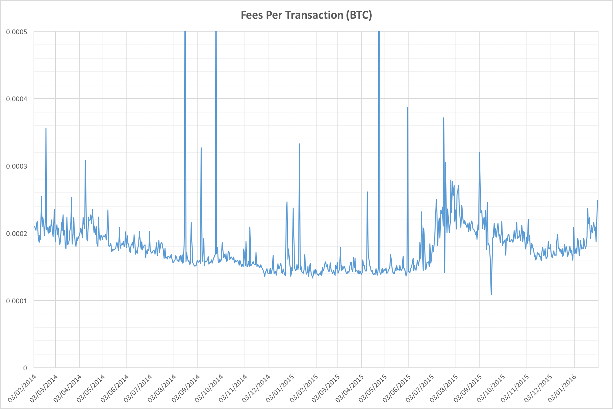
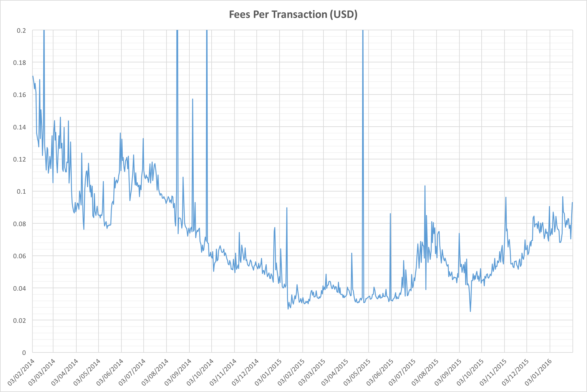
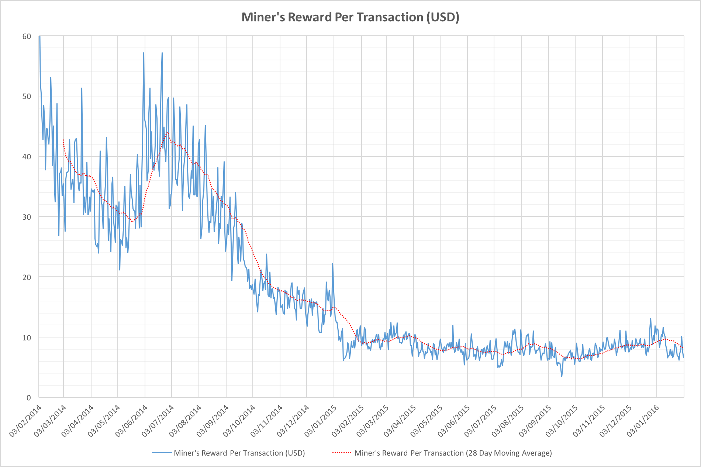

Dave Hudsonhashingit.com |
A market for Bitcoin transaction fees?
Most participants in the ongoing Bitcoin block size debates have a point of agreement; that a shortage of block space should have an effect on transaction fees. Arguments aside, then, let’s see what has actually been happening. Are fees going through the roof? Are miners going to be celebrating a potential offset to the block reward halving that looms in July 2016? The results seem a little surprising!
Rewards for a Bitcoin miner
Bitcoin miners earn their per-block rewards in two ways. They collect a block reward subsidy that halves every 210,000 blocks and they collect the fees assigned each transaction within a block. Historically the fees have represented a tiny fraction of the total reward.
Despite being far smaller, they are still actually worth a reasonable amount of money per year to the block makers who collect them. At the time of writing they represent around $20,000 per day, potentially $7.3M per year.
An emerging fee market?
If capacity is scarce within the Bitcoin blockchain we would expect to see transaction fees rise dramatically as users seek to ensure their transactions are processed ahead of everyone else’s, but are there any strong indications that this has happened?

We can see that throughout 2014 the BTC-denominated average fee per transaction steadily declined, stabilized in the first half of 2015 and then jumped in July 2015. Thereafter the average fee actually started to fall again. Transaction fees have bounced back up a little in the first few weeks of 2016, but this doesn’t appear to be the fee armageddon that was forecast! If anything fee levels are now back where they were in early 2014.
The trend is certainly curious, so let’s look at the transaction volumes:

As we’d expect, the transaction volume has been steadily increasing (otherwise there would be no block size bickering). The last 2 months have seen particular jumps, but that may in part be explained by the dramatic increases in hash rates again. Rather than a nominal 10 minute block time we’ve been seeing nearer to 9 so the available capacity for low-fee or zero-fee transactions has been higher than we’d expect. Instead of 6 MBytes per hour we’ve probably had more like 6.6 MBytes per hour of block capacity.
It’s quite odd that the transaction rates have jumped quite so much in the last 7 months though, almost doubling. This is the very same period in which the average per-transaction fee had jumped up. The spike in July gives some indication of what happened, however, as this corresponds to the first “Bitcoin flood attack” (see: https://en.bitcoin.it/wiki/July_2015_flood_attack). The flooding event caused the network to adjust fees upwards, but thereafter fees steadily declined again as fee-bearing transactions saw minimal impact on confirmation times.
The first chart we looked at considered BTC-denominated fees, but what if we look at them in USD?

This one actually looks worse. It appears that the fee levels have steadily been increasing since July 2015, but we’re seeing the effect of two different things. As the BTC-denominated fees started to fade back, the USD price of BTC was increasing so dollar-denominated fees do look like they’ve been increasing. It’s notable though that they’re still lower than they were in the first 9 months of 2014.
Total costs per transaction
Finally, something curious: If we look at the cost of each transaction as measured by the USD-valued total mining rewards for each day and the numbers of transactions per day we see that things have been incredibly stable for the last 12 months:

Final thoughts
Far from a fee market emerging to inflate transaction costs, we don’t appear to have very much evidence of anything dramatic happening yet. There are a number of possibilities, but one is that the transaction volume doesn’t really reflect transactions that most users care about. Low value fees for unimportant transactions may well be leaving more interesting transactions unaffected by any concerns about capacity. While the block size squabbles will continue it’s unclear that there have yet been any wide-scale implications for current users of the network.
Data reference
Data for this article was sourced via blockchain.info